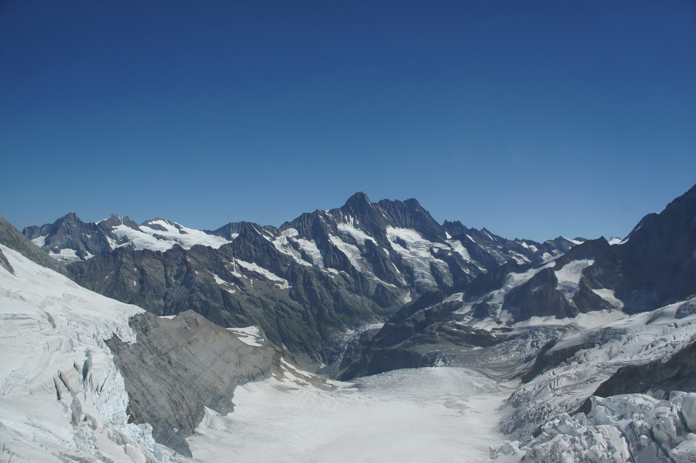

Страна на часовници, шоколади, железници и защеметяващи алпийски гледки
Публикувана на 20 януари 2021 година

Железница с гледка към връх Матерхорн
Всички стереотипи са верни - сирене, шоколад, часовници, натрапчива точност - но в Швейцария човек открива много повече. Големите градове са космополитни и оживени, транспортните връзки са отлични, а пейзажът е спиращ дъха. Швейцария е разнообразна и многоезична - почти всички говорят малко английски заедно с поне един от четирите официални езика. Смело мога да кажа, че съм обиколил големите градове и голяма част от природните чудеса на Швейцария. За две седмици обиколихме цяла Швейцария. Тези месетнца не могат да се опишат с думи, затова ще те оставя да се насладиш на зашеметяващите гледки.
Уникална природа
Величествените Алпи
Вълнуващите пейзажи на Швейцария се редят километър след километър. Ски и сноуборд в Граубюнден, Бернски Оберланд и Централна Швейцария са избор за зимата. Когато пасищата озеленят, пешеходни и колоездачни пътеки изобилстват в планински райони, обградени от ледници, и по-надолу по изгубените долини, блестящите брегове на езерото и грахово-зелените лозя. Разгледайте величието от балон или парашут с горещ въздух или плавайте на бял воден сал. След това идват онези местенца, които трябва да се видят преди смъртта, като например да се сблъскаш с изсечена северна стена на Айгер отблизо или да стигнеш до напукания лед на Юнгфрауйох. Най-необикновеното от всичко е, че не е нужно да си планинар, за да го направиш.
По-добре да видите връх Матерхорн веднъж, отколкото да чуете за него хиляда пъти
Връх Матерхорн с типичната си пирамида
Паметникът на Фреди Меркюри в Монтрьо

Паметникът на Чарли Чаплин във Веве
Зас Фе - в подножието на върховете
Изглед от Юнгфрауйох - най-високата железница в света
Юнгфрау - величествената "Девица"